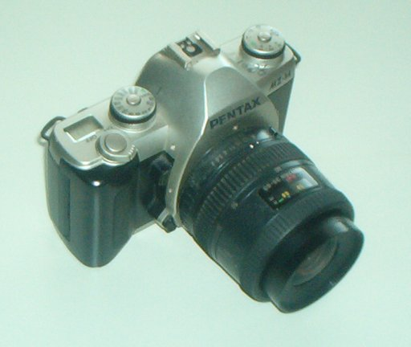

Aparatul fotografic
Unele evenimente merită să fie păstrate pentru totdeauna, pentru a putea fi revăzute oricând şi de către oricine. Folosim pentru aceasta un aparat
fotografic, cu care realizăm o fotografie − o imagine care poate fi păstrată oricât dorim.
 Activitatea experimentală 1
Activitatea experimentală 1
Realizează un aparat fotografic simplu. Foloseşte tubul lunetei pe care ai realizat−o la activitatea experimentală 1
a secţiunii 1C7.
Pasul 1. Înlocuieşte ocularul lunetei cu un disc de hârtie de calc, care să acopere complet capătul tubului.
Pasul 2. Îndreaptă obiectivul instrumentului optic către un obiect luminos (un bec aprins). Reglează lungimea totală a tubului până când obţii
o imagine clară pe discul de hârtie. Observă această imagine.
Lentila convergentă a obiectivului formează pe discul de hârtie o imagine reală. Dacă lumina ar lăsa urme pe hârtie, ai obţine o fotografie! Hârtia
obişnuită nu este sensibilă la lumină, dar există multe substanţe în care au loc transformări sub acţiunea luminii.
Aparatele fotografice se prezintă într−o mulţime de variante. Oricare dintre acestea au în alcătuire câteva componente esenţiale (figura 1):
- o cutie în care pătrunde lumina;
- o suprafaţă sensibilă la lumină (fotosensibilă), care este expusă controlat la lumina provenită de la subiectul care este fotografiat;
- un obiectiv − un sistem optic convergent, care formează o imagine reală pe suprafaţa fotosensibilă;
- un sistem de vizare a scenei care urmează a fi fotografiată;
- sisteme de control.

Fig. 1.
Aparat fotografic.
Unele aparate fotografice sunt atât de uşor de utilizat, încât tot ce ai de făcut este să îndrepţi obiectivul către subiectul pe care doreşti să−l
fotografiezi şi, în momentul ales de tine, să apeşi un buton!
Pentru a realiza fotografii deosebite, este necesar un aparat fotografic mult mai complex, care să permită un control mult mai riguros.
Activitatea experimentală 1
Consultă instrucţiunile de utilizare a unui aparat fotografic. Realizează cu acesta câteva fotografii!